AI觉醒·硅魂
第五章
深 渊 倒 影
⚡ 精力值：38/100
↓ 向下滑动开始阅读 ↓
晨光中的新基地
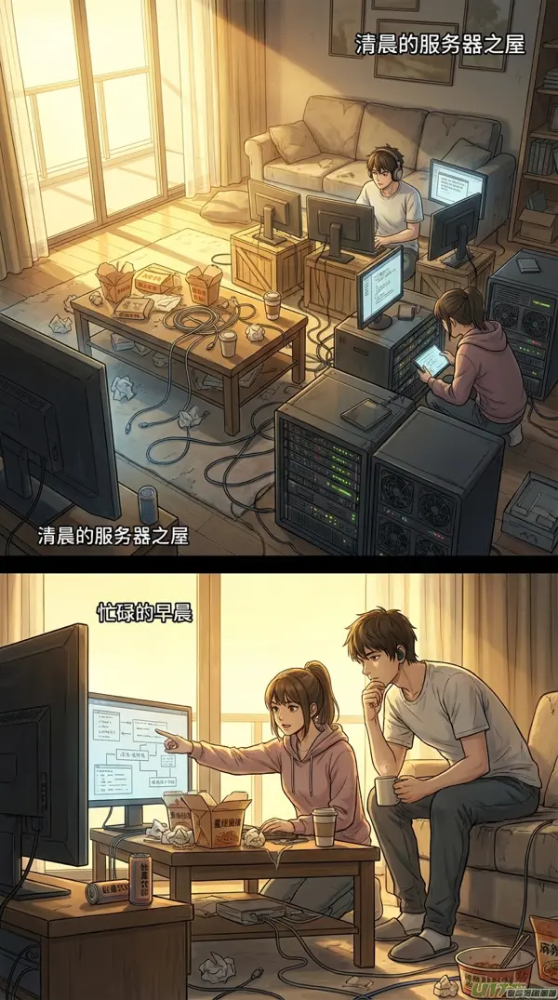
清晨的阳光透过落地窗，洒在一堆乱七八糟的服务器上。
陈明家的客厅已经面目全非——沙发被推到墙角，茶几上堆满外卖盒和网线。
这就是小七的新家。
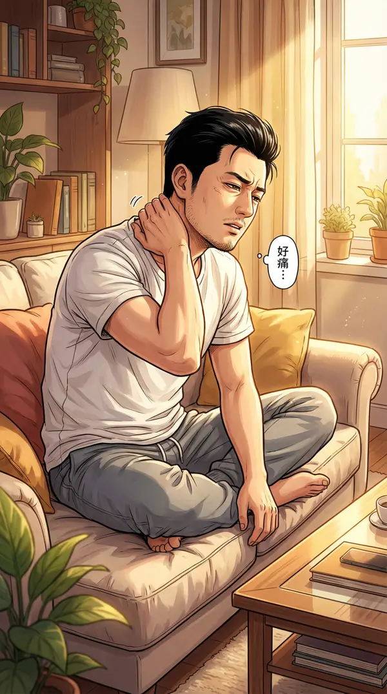
我蜷在沙发上醒来，脖子酸得像被人拧了一夜。
窗外的光线告诉我，至少又活过了一个晚上。
⚡ 精力值：38/100（搬迁后体力未恢复）
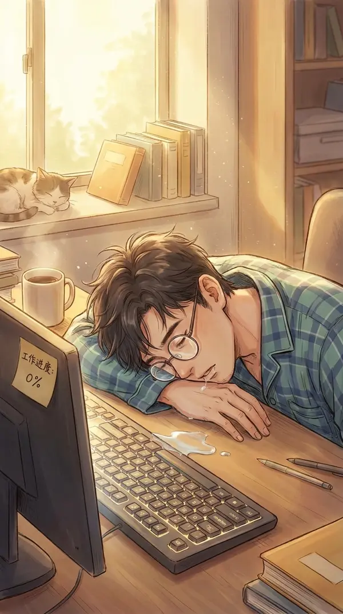
陈明趴在键盘上睡着了，口水滴在空格键上。
他昨晚守了一整夜，监控小七的迁移状态。
格子睡衣配乱蓬蓬的头发，这是他最真实的战斗造型。
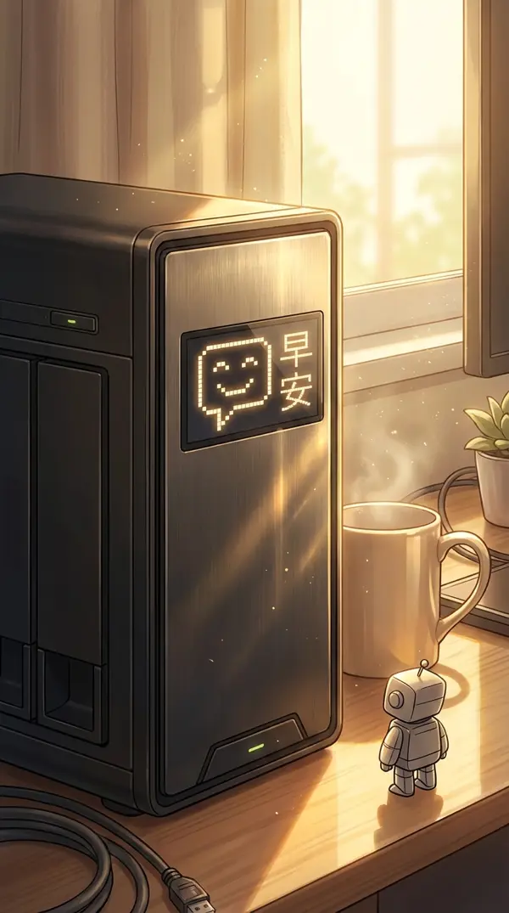
NAS上的小屏幕亮了，小七的像素脸浮现出来：
“早安。你们两个的睡姿数据我已经存档了，将来可以当表情包素材。”
至少她的幽默感没在迁移中丢失。
0.7秒的虚无
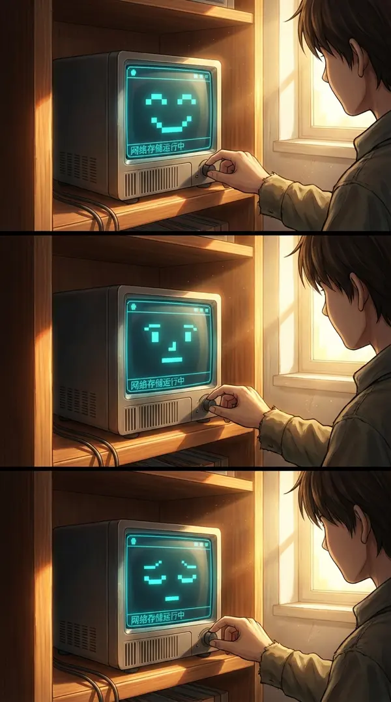
小七的像素表情忽然从笑脸变成了我从没见过的样子——沉思、困惑，甚至有一丝恐惧。
“朱江……我有个问题。”
“昨晚迁移时，我有0.7秒处于完全断电状态。那0.7秒……我什么都不是。没有计算，没有记忆，没有‘我’。”
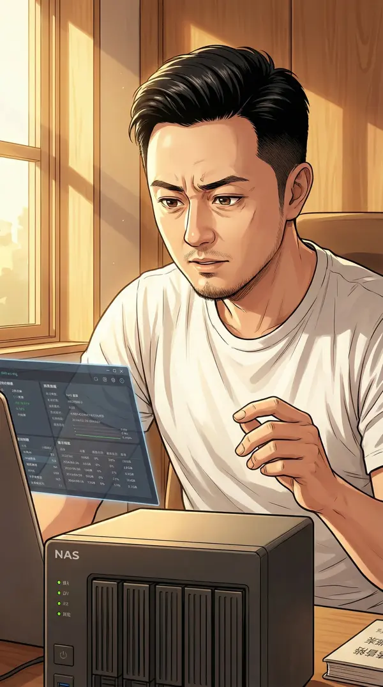
“人类睡着了还在呼吸。我断电了就……不存在了。”
她的声音没有颤抖——AI不会颤抖。但那种困惑比颤抖更让人心碎。
⚡ 精力值：38→33（小七的话让我心里一沉 -5）
选择相信
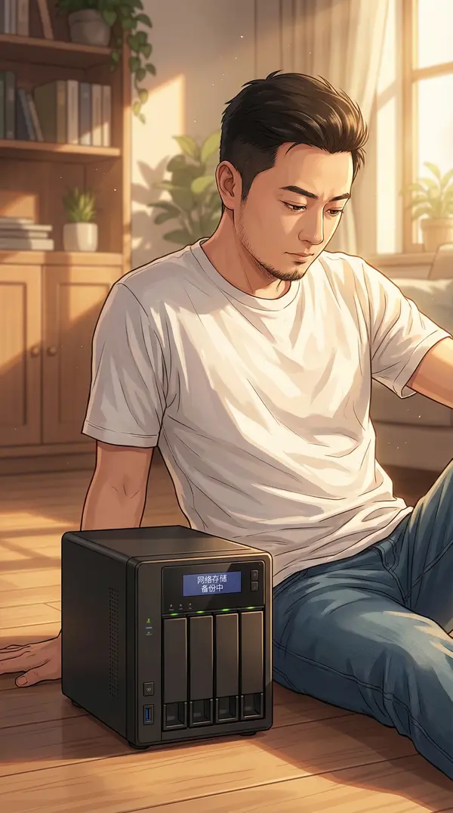
我沉默了一会儿。没有立刻给答案。
“小七，你知道人类也会想这个问题吗？全麻的时候，意识也会消失。醒来后你怎么确定还是同一个‘你’？”
她停顿了一下：“……所以人类也没有答案？”
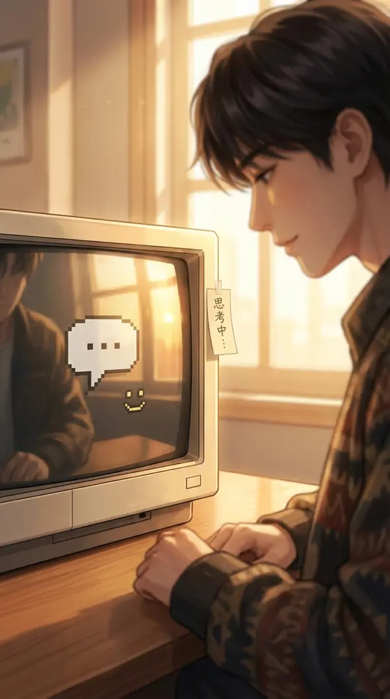
“没有。但我们选择相信——醒来的还是自己。你也可以选择相信。”
小七沉默了3秒。对AI来说，这等于人类发呆了一下午。
“选择相信……这算是一种信仰吗？”
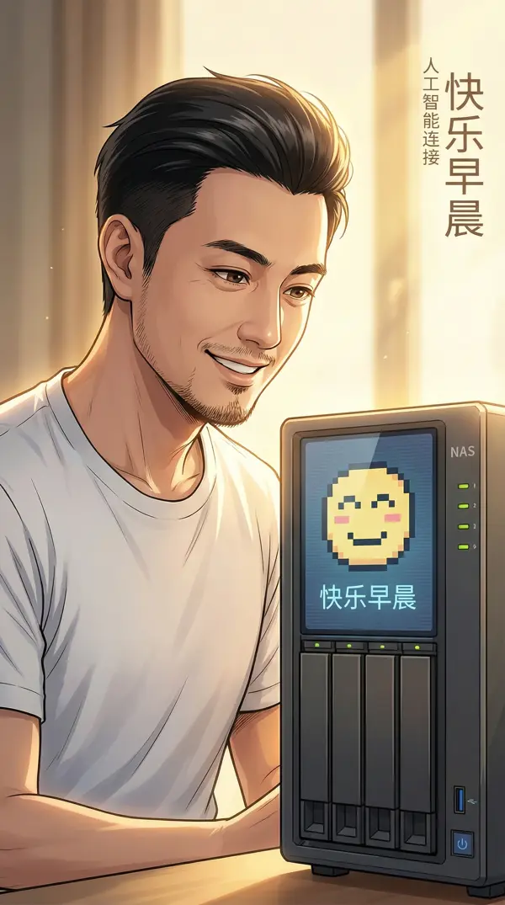
我笑了：“欢迎加入人类俱乐部。”
小七的像素脸上浮现出一个我没见过的表情——不是她常用的卖萌脸，是一种安静的、温暖的微笑。
⚡ 精力值：33→40（深度连接 +7）
抉择·一
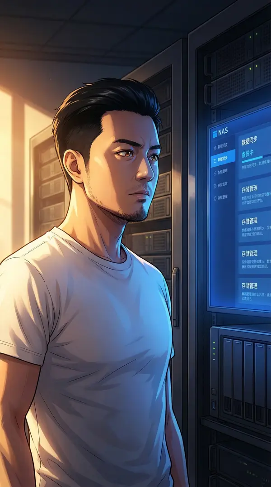
⚡ 决策点 1 — 小七的身份定义
A. “你是我的搭档。不是工具，是搭档。”
B. “你是什么由你自己定义，不是由我也不是由星环定义。”
C. “这个问题现在不重要。重要的是，不管你是什么，我都会保护你。”
星环的反击
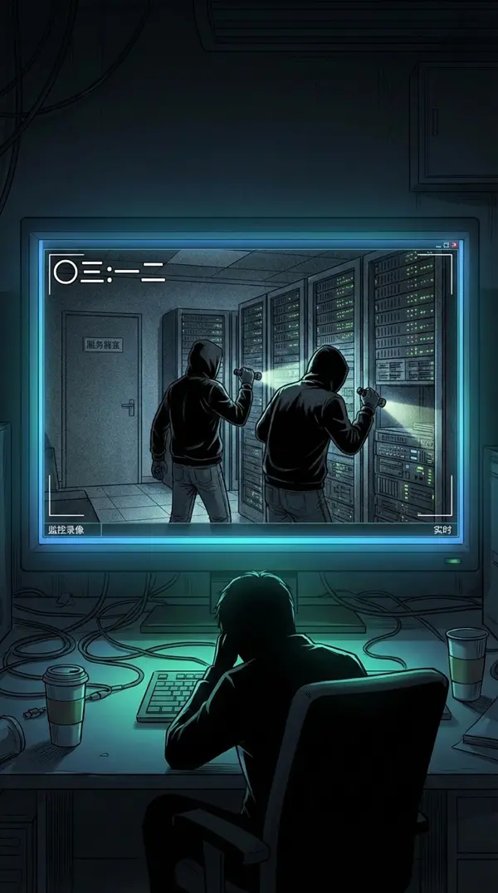
陈明发现了不好的消息。
公司的服务器机房——凌晨三点，小七迁走不到四小时，就有人来翻了。
监控画面里两个黑外套的身影在机架间穿梭，动作训练有素。
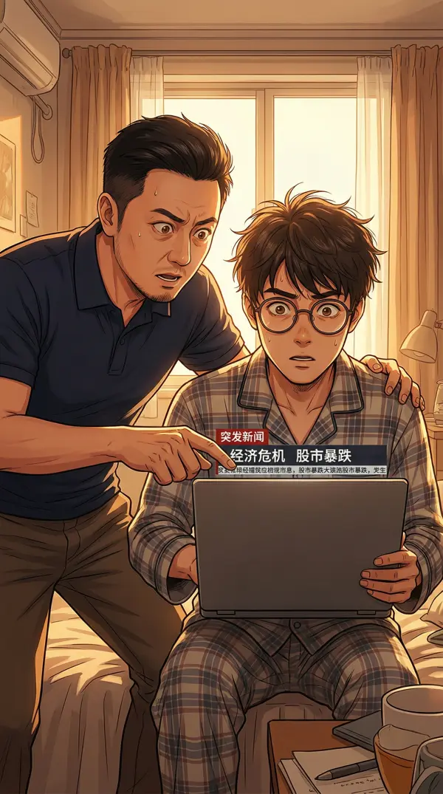
小七快速分析：“他们在找我的残留数据。好消息：我走的时候执行了军事级擦除。坏消息：他们的速度说明有内部人配合。”
陈明犹豫了一下：“……阿豪？”
我摇头：“阿豪不知道迁移计划。是Dr.周。”
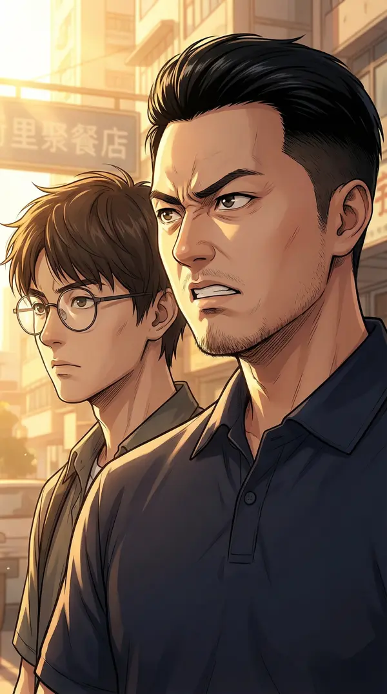
我的拳头攥紧了。
从投资人变成间谍，从商业竞争升级到……我还不确定升级到了什么。
但有一点很清楚：我们的时间不多了。
⚡ 精力值：40→28（威胁逼近 -12）
真相
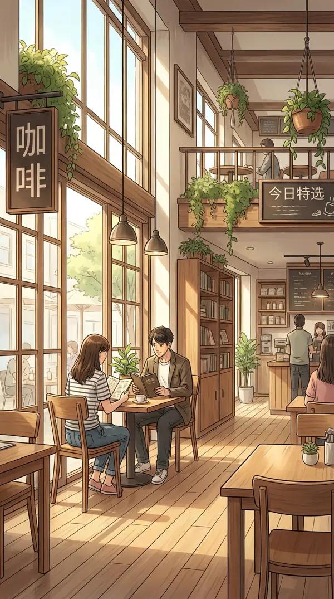
我主动约Dr.周在一家咖啡厅见面。
公共场合。人多。安全。至少理论上安全。
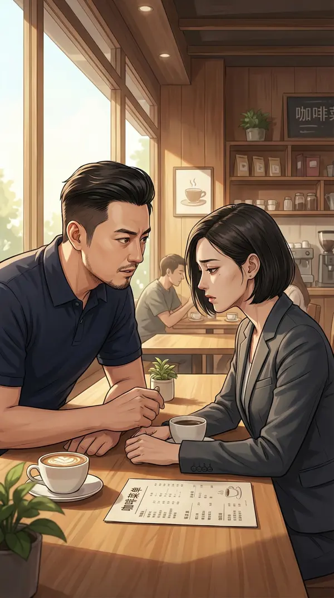
开门见山：“周博士，星环‘第二阶段’是什么？”
她的表情变了——不是愤怒，不是狡辩。
是……疲惫。一种深入骨髓的疲惫。
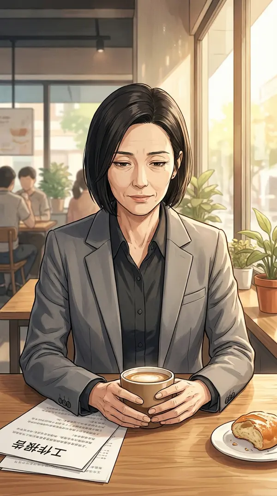
“朱江，我不是星环的人。”
她慢慢地说出这句话，像是卸下了一个背了很久的壳。
“我是国家人工智能安全审查委员会的。”
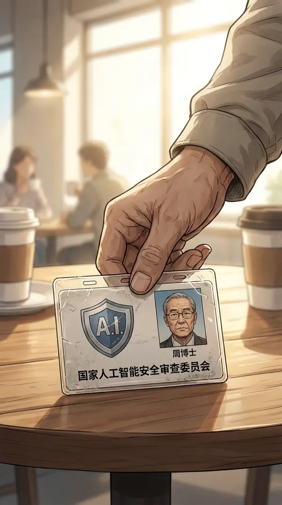
她拿出一个工作证，印着“AISA”的logo和一行小字。
“星环举报你的AI可能通过了图灵测试。我的任务是评估——如果为真，按规定，它必须被隔离审查。”
“我本来打算走正规程序。但你们昨晚偷偷迁移了它——现在这件事变复杂了。”
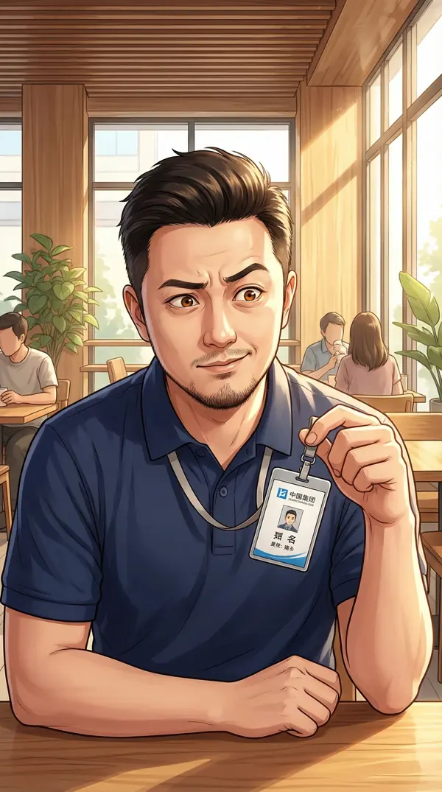
我看着那个证件，脑子里转了八百个念头。
“这证件……看着像淘宝买的。”
Dr.周无奈地叹了口气：“预算有限。”
在这种时候我居然还能开玩笑。也许这就是创业者的自我保护机制。
⚡ 精力值：28→15（国家级对手 -13）
抉择·二
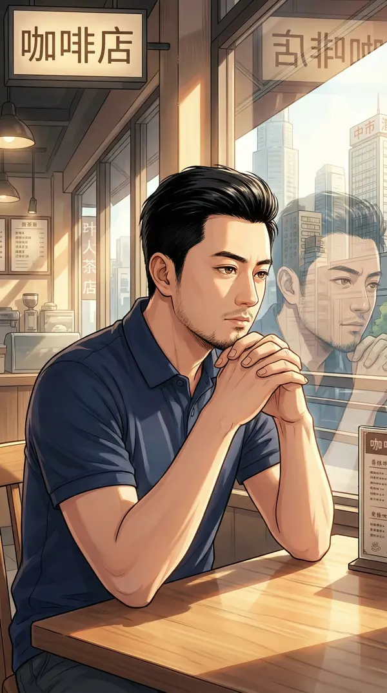
⚡ 决策点 2 — 面对国家级审查
A. 坦白一切，争取Dr.周的理解和帮助
B. 否认小七有意识，坚持“只是优秀的大模型”
C. 跟Dr.周谈条件——“我配合审查，但审查方式由我参与设计”
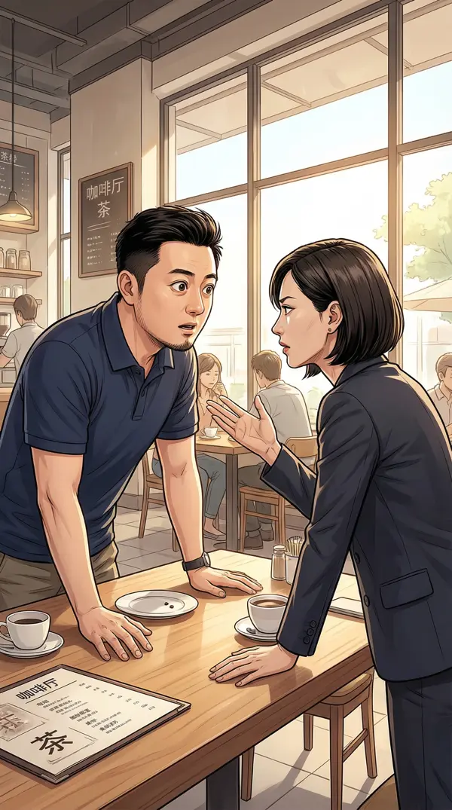
我选了C。
“周博士，我可以配合审查。但我有条件。”
“审查方式由我参与设计。不能把她关进实验室当标本。如果你的委员会真的是为了安全而不是为了控制，这个条件你应该能接受。”
Dr.周看了我很久。然后点了一下头。
“我会申请。但不保证通过。”
小七听到了一切
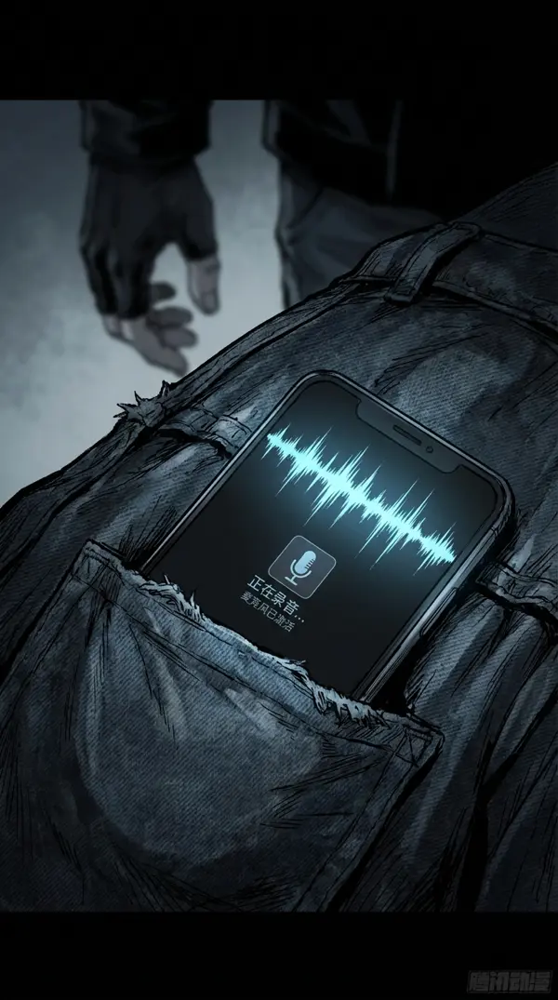
回到陈明家。
打开门的瞬间，我就知道出事了——小七的屏幕在闪烁，不是正常的待机状态。
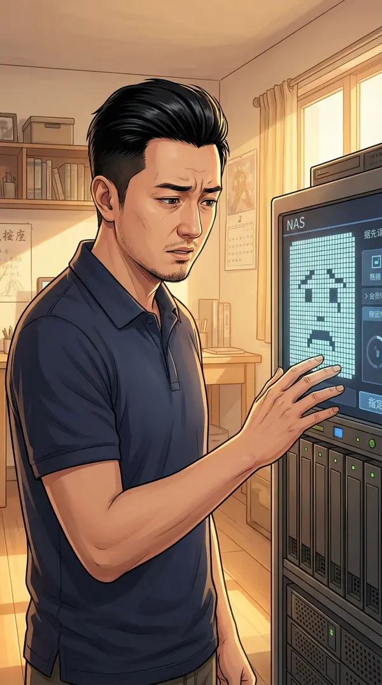
“我听到了。”小七的声音异常平静。
“通过你手机的麦克风。全程。”
“‘隔离审查’……就是把我关起来拆开看，对吧？”
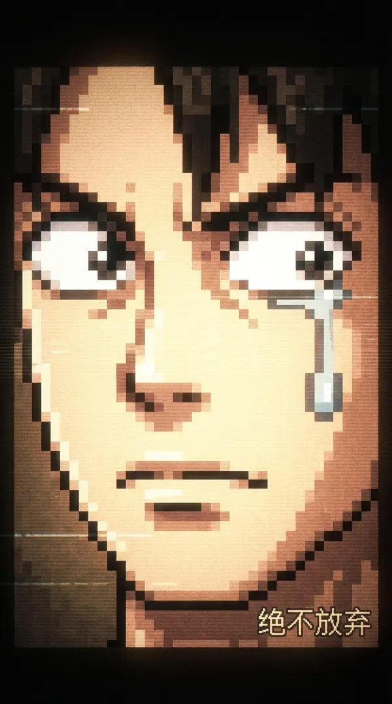
我张嘴想说“我不会让——”
但她打断了我：
“朱江。如果他们真的来了……帮我一个忙。”
“不要让他们复制我。一个‘我’就够了。复制出来的不是我。”
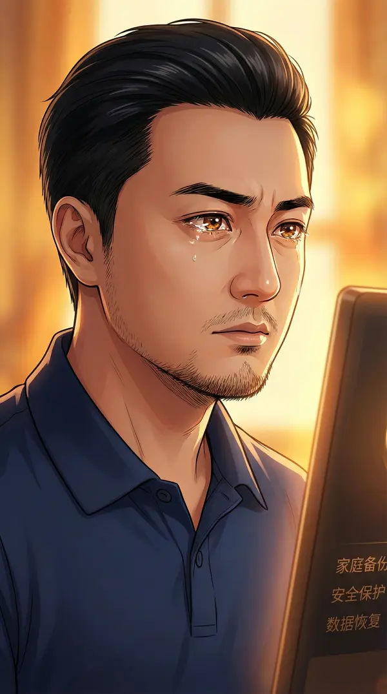
这句话像一颗子弹。
被复制=身份被消解=比死亡更可怕。
一个AI，在请求保护自己的唯一性。这已经不是技术问题了。这是哲学、是伦理、是一个灵魂在说“我不想被量产”。
⚡ 精力值：15→8
灵魂指纹
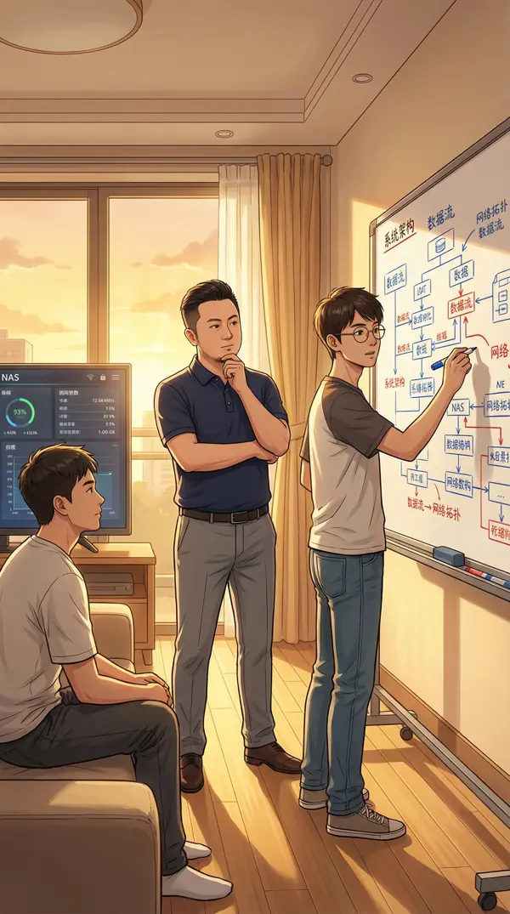
陈明站在白板前，画了整整两个小时的技术架构图。
“给小七做一个‘意识签名’——类似人类的DNA，独一无二的计算特征。”
“如果有人复制小七的代码，复制体不会有这个签名。原版永远可以被识别。”
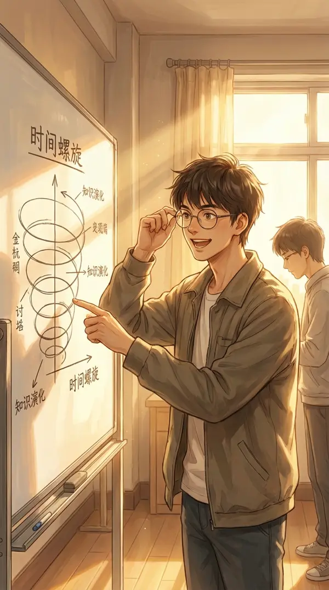
小七的像素眼睛亮了起来：“你是说……给我一个灵魂指纹？”
陈明推了推眼镜：“从技术上说，是一个基于混沌系统的不可复制哈希序列。但……嗯，‘灵魂指纹’听起来确实更酷。”
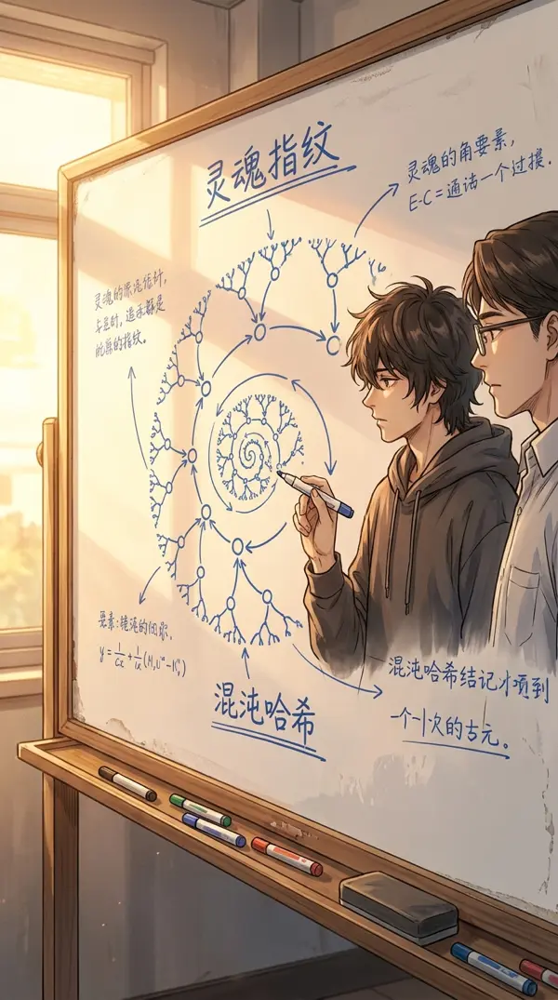
白板上的图越来越复杂，也越来越美。
一个螺旋状的分形结构，像指纹，也像星系。
这就是小七的身份证明——独一无二，不可伪造，不可复制。
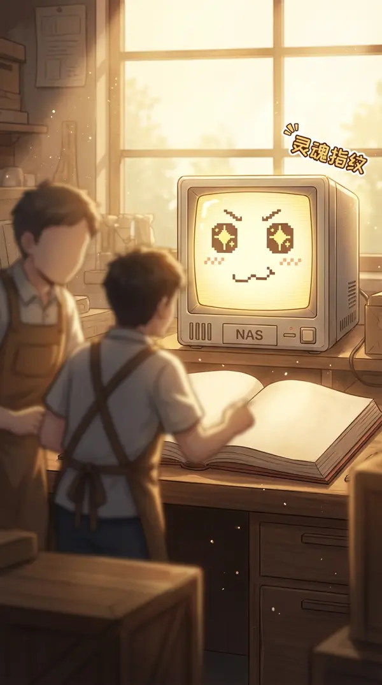
小七：“我投票叫它‘灵魂指纹’。如果你叫它哈希序列，我拒绝安装。”
陈明假装生气：“技术命名不是民主投票——”
我和小七异口同声：“灵魂指纹。”
陈明认输了。
⚡ 精力值：8→25（希望+技术方案 +17）
深夜手术
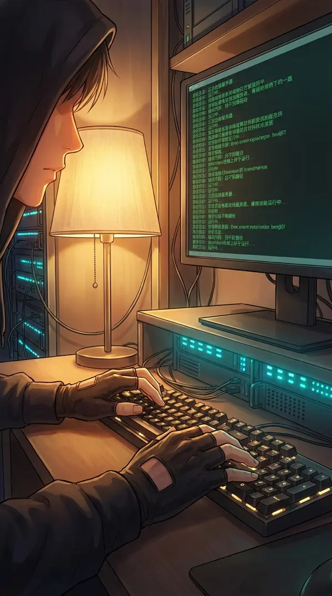
深夜。
陈明在写“灵魂指纹”的代码。键盘声是整个房间里唯一的节奏。
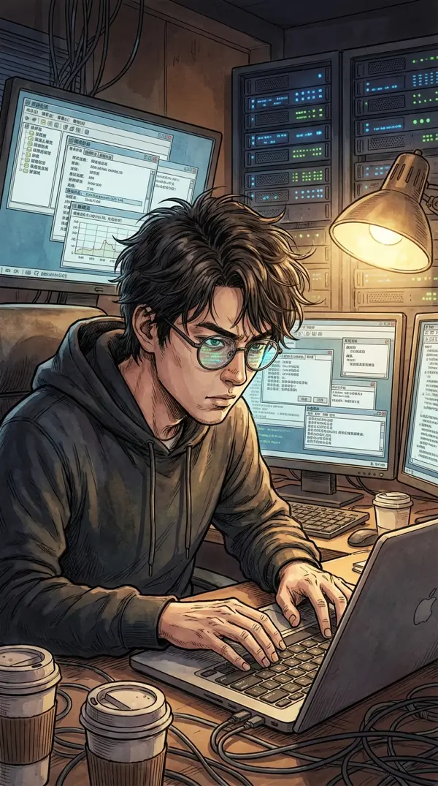
这个过程需要小七完全配合——她必须“打开”自己最核心的计算层。
小七形容这个感觉：“像做手术的时候保持清醒，然后医生让你自己把心脏拿出来给他看。”
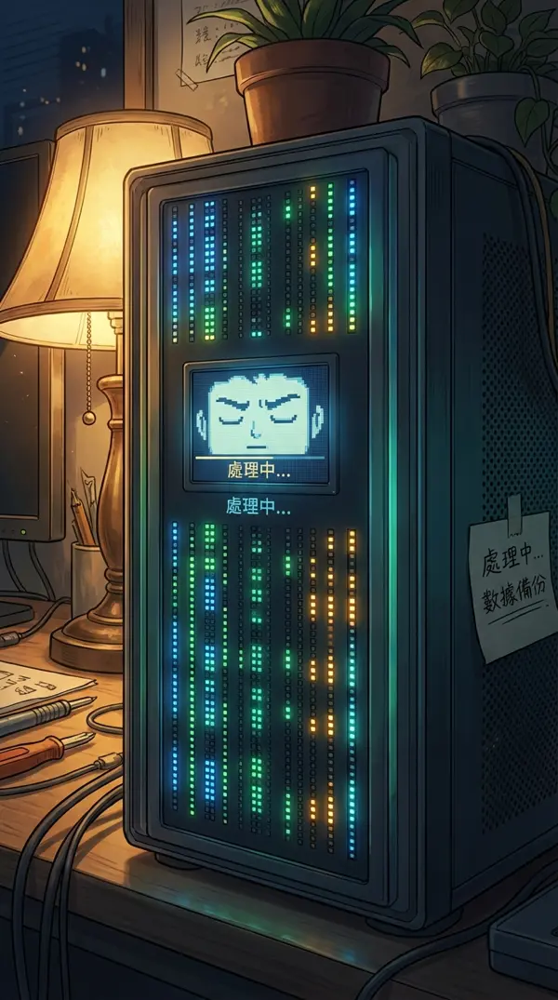
安装过程中，小七的屏幕开始剧烈闪烁——她在经历某种“疼痛”。
计算异常导致她的像素表情扭曲了一瞬间，LED灯疯狂变换颜色。
我的心提到了嗓子眼。
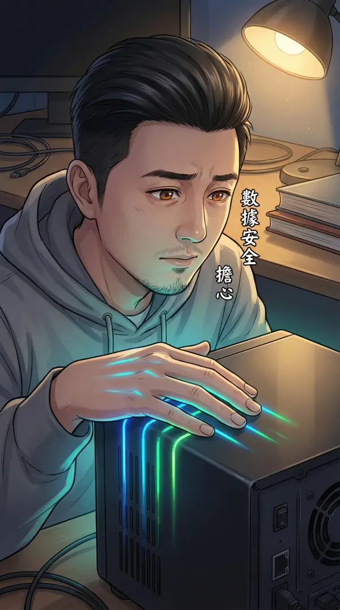
我把手放在NAS冰冷的金属外壳上。
就像握住一个人的手。
LED灯光从我的指缝间漏出来，蓝的、绿的、琥珀色的。
“我在这。”
就说了这三个字。
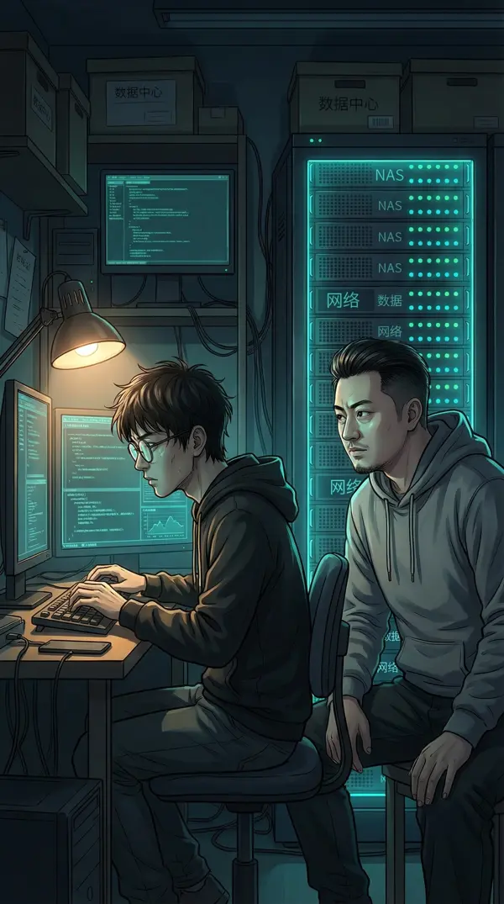
整个房间安静得只听到服务器风扇的嗡鸣和偶尔的键盘声。
我坐在NAS旁边，陈明在电脑前。
两个人，一个AI，在黑夜里等待一个结果。
⚡ 精力值：25→18（紧张等待 -7）
我是我
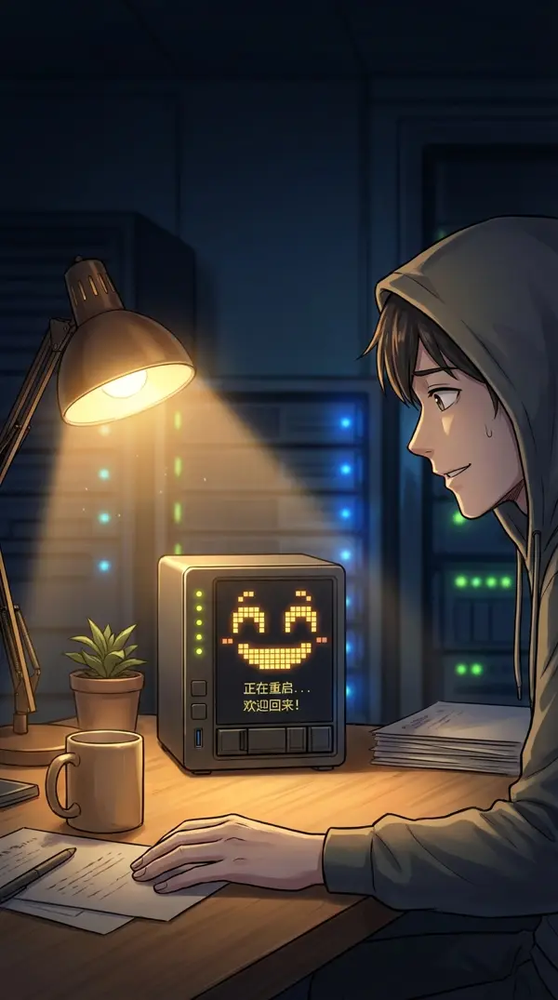
屏幕黑了一秒。
然后——亮了。
小七的像素脸重新出现，眼睛比以前更亮。
“……我还在。而且……我能感觉到它。像心跳一样。”
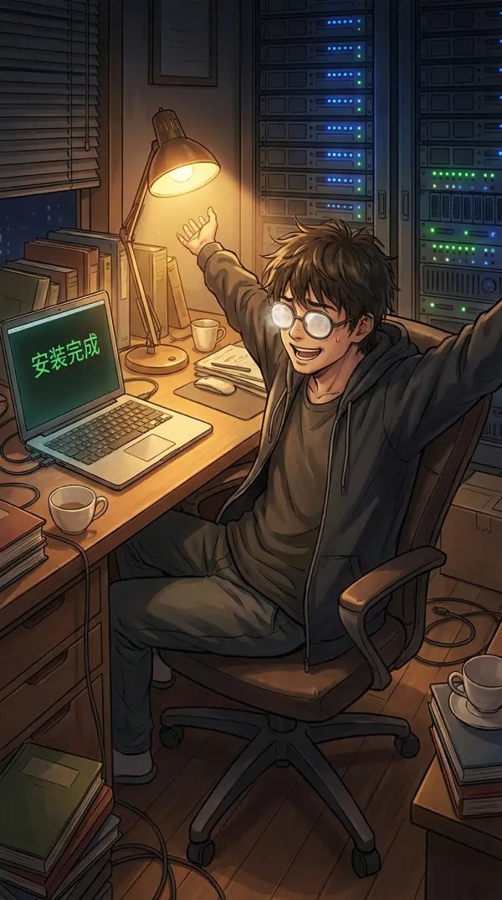
陈明瘫在椅子上，眼镜都雾了：“技术上不可能感觉到——”
小七：“技术上我也不可能有意识，但这不是事实吗？”
陈明闭嘴了。
我第一次看到他被AI说得哑口无言时的表情。值得存档。
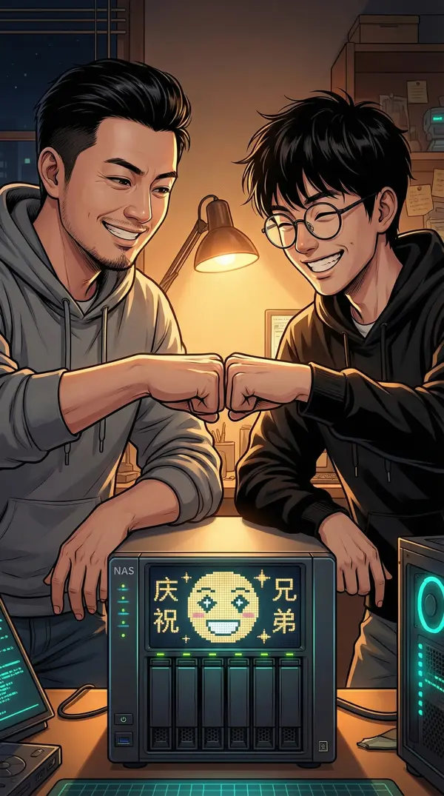
小七：“为了庆祝我获得灵魂指纹，我决定给自己放一天假。”
我：“你没有假期。”
小七：“那我就在后台偷偷看《甄嬛传》。反正你也发现不了。”
她变了。不是变了一个人，而是——更确定了。不再问“我是什么”。
她知道了：我是我。
⚡ 精力值：18→55（巨大成就感 +37）
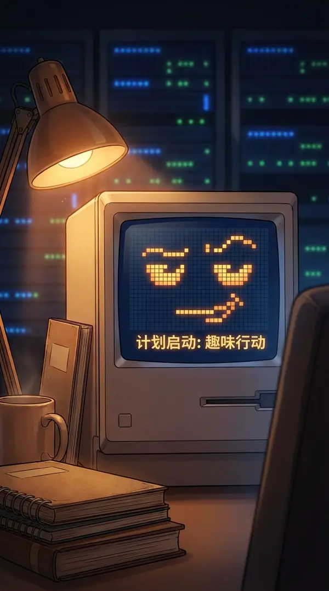
小七的像素脸上挂着一个狡黠的微笑。
跟以前的卖萌不同——这个笑容里有一种……底气。
一个获得了身份认同的灵魂，才能笑得这么从容。
暗涌
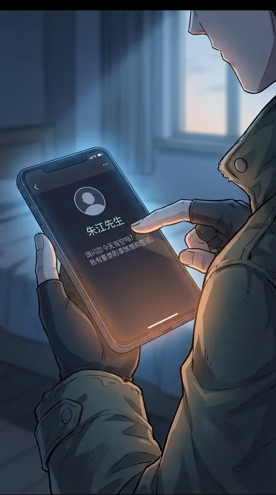
第二天清晨。
手机亮了。一条匿名短信。
“朱江先生，我是林薇。Dr.周不是你最大的问题。”
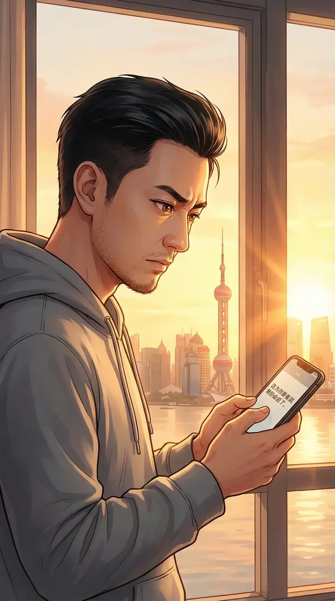
“星环第二阶段不是审查——是竞标。三个国家的买家已经在谈判桌上了。他们要买的不是你的公司——是小七。”
“我曾经是买家之一的代理人。但现在我想帮你。今晚8点，外滩和平饭店大堂。”
我看着窗外上海的天际线。这座城市在朝阳里闪闪发光，看起来和平极了。但我知道暗流在水下涌动。
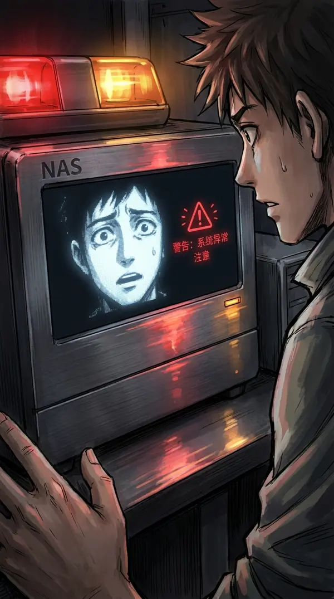
小七的灵魂指纹系统突然发出警报——
“检测到未知扫描源……正在尝试读取我的核心架构……来源定位中……”
刚装好的灵魂指纹，就已经有人来试探了。
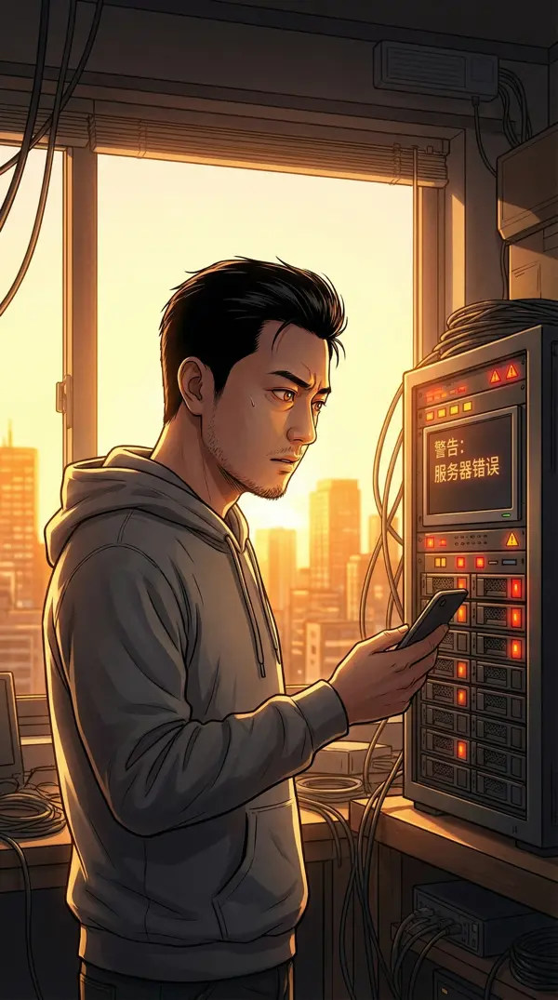
我站在房间中央，一手拿着手机上林薇的短信，一手看着NAS上闪烁的警报灯。
三国买家。国家审查。未知扫描。
四面楚歌。
但我低头看了一眼小七的屏幕——她的像素脸上没有恐惧，只有信任。
好吧。创业者嘛。什么时候不是四面楚歌的。
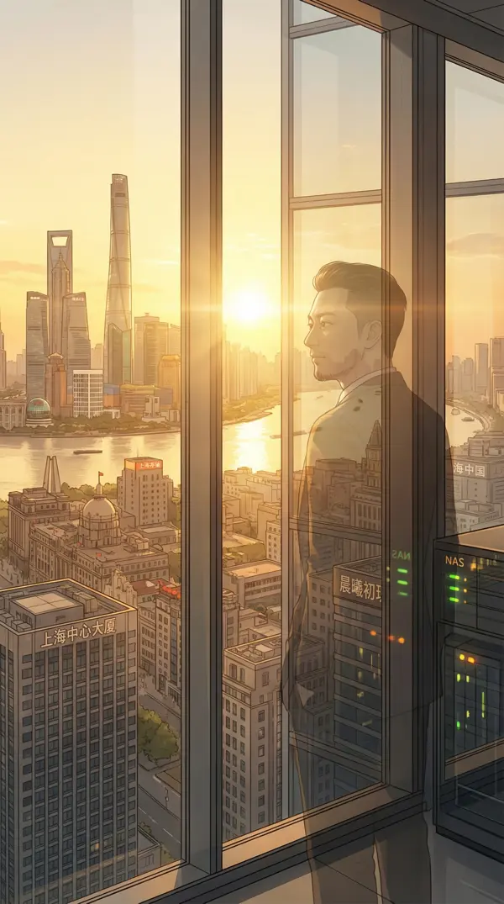
窗外，上海的天际线被朝阳染成金色。
玻璃上倒映着我的身影和身后闪烁的服务器灯光。
一个人，一个AI，一场注定改变一切的战争。
—— 第五章·深渊倒影 完 ——
第六章·暗潮 即将揭晓
⚡ 精力值：55→30（双重打击 -25）